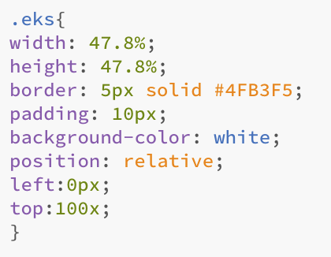

Webteknologier
Kort intro til forløbet
I dette forløb har vi arbejdet med kodning i HTML og CSS, med et mål om, at lave en hjemmeside helt fra bunden. Vi har desuden undersøgt og lært om internettets historie, samt hvordan internettet faktisk fungerer. Selvom internettet og websites er noget vi tager i brug hver dag, er der en overraskende lille del af ungdommen, der faktisk ved hvordan man programmerer. Programmering kan i starten virke helt fremmed, men her vil jeg vise et lille udsnit af den kode, som jeg har brugt til at programmere netop denne hjemmeside, samt vise at det faktisk ikke er lige så svært, som man måske går rundt og tror.
Eksempel på kode i HTML
Her er et eksempel på noget kode jeg har brugt, til at konstruere netop denne hjemmeside.

I den første linje definerer jeg en <div class="link"> hvilket gør det muligt for mig at manipulere med de næste linjer kode jeg skriver ind, vha. værktøjer som eksempelvis CSS. Her er navnet på den class jeg har defineret altså "link". Herefter har jeg indsat et link til denne underside ved navn "Webteknologier", og hvis man trykker på det, vil det resulterer i, at man kommer ind på netop denne underside. De to næste linjer kode er til fremtidigt brug, hvis jeg skal indsætte links til fremtidige underside omhandlende de næste forløb. Til sidst slutter jeg af med </div>, for at indikere, at det kun er det der står inde for de to "divs" der skal reagere på mine eventuelle manipulationer. Her er et billede af hvordan det ser ud på siden:
Eksempel på kode i CSS
Her er et eksempel på noget kode jeg har brugt, til at konstruere layoutet på netop denne hjemmeside.

Her vises der, hvordan man desginer en boks, eksempelvis som denne jeg skriver i lige nu. I HTML har jeg defineret en <class> ved navn "eks" som jeg inde i CSS nu gerne vil manipulere med. I de første to linjer indstiller jeg længden og bredden, herefter omkranser jeg boksen med en en blå border på 5px. Den næste linje hedder padding, og den kommando bliver brugt til at fortælle CSS hvor meget afstand der skal være rundt om et element, indenfor diffinerede grænser. "Background-color" giver lidt sig selv, det er altså hvilke farve baggrunden i boksen skal have. "Position" har jeg indstillet som relativ, så jeg kan manipulere med placeringen af boksen. De næste to linjer er netop manipulering af positionen af boksen.